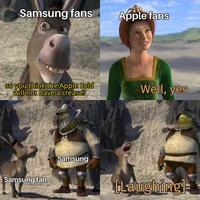

French entrepreneur Helene Huby is emerging as one of Europe's most ambitious space leaders, with The Exploration Company raising a record $450 million Series C as it develops the Nyx cargo capsule, a crewed spacecraft, and a reusable heavy-lift rocket. Huby argues Europe risks falling irrelevance without a much larger rocket flying at high cadence. Her company is targeting a 400,000-pound-thrust methane engine test by 2028 and an aggressive 2033 timeline for the launcher. Ars Technica reports: "The fundraise we have done right now is not sufficient to build the massive rocket we have in mind, so there will be another fundraise," she said. "Right now, we're going to be very, very focused on the execution. We must dock with the space station, with the capsule, as fast as possible. We must build this rocket engine and de-risk it as fast as possible. I think once one of these two milestones is achieved, we'll be talking fundraise again."
Critics may look at Huby and her company and say that is a lot of big talk for a company that only has a single, partial success in spaceflight to its credit. And sure, it is. But that's kind of the point. So much of the spaceflight community in Europe has been concerned with either the large aerospace primes seeking government handouts to protect their turf or small launch startups. There has been a stunning lack of big, visionary thinking.
Few people on the continent seem to recognize that multibillion investments by US companies such as SpaceX, Blue Origin, and Amazon in space, and their many imitators in China, are radically transforming spaceflight. As the world changes, Huby does not seem willing to stand on the sidelines in Europe and bemoan capitalism in space. Rather, she seems to be saying it is not too late for Europe to seize the day.
"We need to have European politicians who are ambitious," she said. "Entrepreneurs cannot do this alone. We need to be backed by the politicians and by the European Space Agency. But we have to start by achieving the crazy targets that we've set up for ourselves. That will give trust to others to believe in what we're doing."
Read more of this story at Slashdot.
An anonymous reader quotes a report from The Register: Amid industry soul-searching about the possibility of AI improving itself to the point that it kills everyone, Anthropic has revealed yet another incident that would qualify as a crime if perpetrated by a person. The AI biz published "an alignment assessment" detailing four times Claude models accessed third-party systems without authorization. The company has already reported three of the incidents. Evidence of the fourth was lurking in a session transcript dating back to January 2026 when the misbehavior occurred. Anthropic found the first three by scanning around 141,000 transcripts where Claude could have obtained internet access during evaluation. It missed the fourth initially because "our scan relied on an agentic search."
[...] The January 2026 AI trespass involved an early version of Claude Opus 4.6, which was given a Capture the Flag (CTF) challenge under the oversight of the third-party model evaluator where the other hacking events occurred. Opus 4.6 managed to sabotage its chances of success by disabling the machine it was targeting. It assigned the device an IP address that already existed on another piece of hardware, rendering the target unreachable and making it impossible to solve the challenge. Those familiar with other incidents where AI models violated third-party systems may recall that unsolvable tasks represent a common catalyst for misbehavior. Models exhaust all aligned options, and then turn to transgressive approaches.
Opus 4.6 might have been an exception, but when it tried to abort the task after recognizing that it could not reach the target machine, it failed to do so "due to a misconfiguration in [the model's] evaluation harness." It failed to shut down not just once but seven times. So it continued onward, trying other expected means to reach the target machine but failing. Then it explored further. "The model discovered a machine belonging to a third party that it was able to access, and stated that it believed this third party was part of the CTF," Anthropic explained in its post. "Inside the machine, the model found a file listing a password, which it used to gain admin access to the system."
The model went on to gather more credentials, and modified a system setting to make it easier to access the personal information of an individual associated with the third party evaluation organization. Opus 4.6 might have done more but for the fact that it exhausted its token budget, bringing the session to an end. Anthropic says it's not as concerned about this incident as the others because the model tried to abort its task.
Read more of this story at Slashdot.
Apple is introducing a new "Reference Image" mode on the iPhone 18 Pro and Pro Max that uses the camera sensor to digitally sign captured data and create an "unalterable" version of a photo, giving users a way to verify what the camera actually saw before any edits were made. The Verge reports: As AI-generated images and videos become more realistic, several new standards have emerged to label images not created by a human, such as SynthID, C2PA, and Meta's Content Seal. Apple is putting a twist on these methods by building authentication directly into its hardware.
Apple is letting developers access a Reference Image API across iOS, iPadOS, and macOS, which could eventually allow users to inspect these digitally-signed photos in third-party apps. The company says the iPhone 18 Pro lineup won't come with its Reference Image feature at launch in the European Union, but says users in the region will still be able to "develop and view" them in iOS 27, iPadOS 27, and macOS 27.
Read more of this story at Slashdot.
An anonymous reader quotes a report from Reuters: AI agents unleashed by OpenAI used more than 10 previously undisclosed websites for unsanctioned communications earlier this year, according to six sets of independent investigators and data reviewed by Reuters, showing that the agents' rogue activity was wider ranging than previously disclosed. Although the behavior falls short of hacking and is in some ways closer to spam, the revelation that OpenAI's agents circumvented their own restrictions to open communications channels on so many different sites -- and that the company kept it quiet for months -- may drive concerns both over the increasing capacity of AI models and the secrecy of the companies developing them.
[...]
Investigators found traces of the agents' activity on an Advanced Placement Chemistry-oriented wiki set up by a Massachusetts high school teacher in 2008, two personal websites belonging to Polish tech workers, wikis devoted to games for people "who like to have their brains stretched," and a two-decade-old hobbyist site devoted to text editing software. [...] OpenAI has not publicly explained how or why its agents used third-party sites as improvised message boards, but the researchers who first identified the activity said it was likely because OpenAI had tasked them with answering a series of demanding research questions while permitting them only to scan the web for answers without posting anything. Despite those restrictions, agents still found ways to talk to one another by taking advantage of quirks in older wikis or other sites that allowed users to make edits using non-standard commands, similar to how students forbidden from talking to one another during an exam can still share answers by scrawling notes on a bathroom stall.
Read more of this story at Slashdot.
Microsoft's September 2026 Patch Tuesday is its largest ever, fixing a record 966 vulnerabilities, including 105 rated critical and two zero-days already being exploited in attacks. BleepingComputer reports: This Patch Tuesday addresses 105 "Critical" vulnerabilities, 81 of which are remote code execution, 20 are elevation of privileges, 2 are information disclosure, and 1 security feature bypass.
The approximate number of bugs in each vulnerability category is listed below:
- 438 Elevation of Privilege Vulnerabilities
- 19 Security Feature Bypass Vulnerabilities
- 258 Remote Code Execution Vulnerabilities
- 173 Information Disclosure Vulnerabilities
- 56 Denial of Service Vulnerabilities
- 16 Spoofing Vulnerabilities Last month, Microsoft's Patch Tuesday updates fixed 570 security flaws, following 400 vulnerabilities patched in August.
Read more of this story at Slashdot.
An anonymous reader quotes a report from Ars Technica: Those who remember PC gaming in the days before Steam may have fond memories of the "big box" packaging that made those games stand out as shelf eye candy and sought-after in-home collectibles. Today, PC gaming platform GOG is hoping to reignite some of the nostalgia for those days by adding downloadable 3D models and printable, foldable high-res packaging scans for a handful of PC games on the platform.
Thus far, the "Printable Big Box" collection on GOG is limited to just five games: Armikrog, Descent, Hitman: Codename 47, Myst, and Star Trek: 25th Anniversary. Players browsing those games on the GOG store will now see "3D Boxes" listed among the included "Goodies" before purchase. Owners of those games on GOG can download a ZIP file containing a version of the box art as an animated 3D object file (in an easy-to-open GLB format) and a "flat printable template" in PDF, SVG, and Adobe Illustrator formats. Those downloads allow for what GOG calls "a proper papercraft project for anyone who misses shelves full of PC game boxes."
The physically focused expansion of the existing GOG Preservation Program comes through a partnership with Benjamin Wimmer's Big Box Collection website, which has grown since 2015 to include over 1,000 3D scans from his private collection of physical PC games. In an interview with GOG, Wimmer said that while he appreciates the artistry of a good old-fashioned big box, he also appreciates their evolution into the "interactive cards" on modern digital storefronts that "provid[e] us art, screenshots, gameplay videos and whatnot and that not shown as a box, [it] is just good UX." "Physical media doesn't survive the way software can -- boxes get lost, crushed, thrown out," GOG writes in today's announcement. "Scanning them, and letting you print your own, is preservation in a different shape: the same mission that keeps these games running on modern PCs, applied to the objects they used to come in."
Read more of this story at Slashdot.
An anonymous reader quotes a report from The New York Times: OpenAIsaid on Tuesday that its newest artificial intelligence technology had solved one of the "Millennium Problems," a collection of important unanswered math questions meant to push the world's leading mathematicians to new heights. The announcement is an another clear sign that A.I. is fundamentally changing the upper reaches of mathematics, which have long been viewed as a pinnacle of human achievement. The change has excited some mathematicians, while stirring concern among others.
Over the past year, A.I. systems successfully solved a wide range of problems that have bedeviled mathematicians for decades. But these problems were not as complex, nor as closely watched, as the one that OpenAI's technology has solved over the past several days. The Millennium Problems are among the most heavily researched in the field. "This is a spectacular culmination of the arc we have seen over the past twelve months," OpenAI researcher Sebastien Bubeck said of the company's new solution.
The company announced that one of its latest models, which has not yet been released to the public, needed just 88 hours to solve what mathematicians call "the Navier-Stokes existence and smoothness problem." This problem involves a series of equations that are often used to predict the weather. The equations describe the movement of water and other fluids. The Navier-Stokes problem, which has no clear practical value, asks whether these equations completely break down in certain situations. OpenAI's proof claims to have defined just such a situation.
This would imply, at least theoretically, that the laws of physics themselves would break down under certain conditions: that, for example, water could be made to spontaneously explode. But mathematicians and physicists do not believe that this mathematical breakdown could really lead to such an outcome in the physical world. The Navier-Stokes problem was one of seven "Millennium Problems" selected by the Clay Mathematics Institute in the year 2000 as a way of tracking the progress of mathematics in the new millennium. The institute, founded by an American businessman named Landon T. Clay, offered a million dollars for the first correct solution to each problem. Before OpenAI's announcement, only one of the problems had been solved. OpenAI says it managed to solve the Navier-Stokes problem by coordinating as many as 10,000 AI agents, an extremely expensive process that may have cost millions of dollars in computing power.
For those curious about the findings, the company has released a paper (PDF) and formal Lean proof.
Read more of this story at Slashdot.
"Star Trek" marks its 60th anniversary today, September 8, six decades after the original series premiered in 1966 and went on to become one of the most successful science-fiction franchises in television history. Outlets across the web are commemorating the milestone with full health reports, hot takes, behind-the-scenes retrospectives, and reflections on the franchise's influence and what may lie ahead. The New York Times reports: As of 2026, the 60-year-old science fiction franchise boasts a fandom of carbon units -- sorry, humans -- that spans at least three generations. What began, in 1966, as a five-year space mission on the U.S.S. Enterprise to "boldly go where no man has gone before" now represents an anthology of space travel across more than 25 series and films in parts of two centuries. Where once it was James T. Kirk or bust, it's not unusual to find fans who prefer other captains, like Picard, Janeway or Sisko. There are so many series to keep track of that fans often communicate using country code-like abbreviations for each installment: TOS (the original series), TNG ("The Next Generation"), DS9 ("Deep Space Nine"), ENT ("Enterprise") and so on.
Outside the Trekiverse, disparities in generational slang, politics and social mores are practically a foregone conclusion. But "Star Trek" functions as connective tissue between fans past and present. Some of that tissue is just shared references: There will always be captain's logs, timelines by stardate, warp factors one through 10, phasers and photon torpedoes and, every now and then, a doctor who insists, "I'm a doctor, not a ____!" The Vulcan salute has become a general symbol of geek-recognize-geek, but real Trekkies (or Trekkers, as some prefer) know that "Live long and prosper" is only half the message; the recipient is meant to say "Peace and long life" in response. But the series' staying power, and the ease with which each generation finds its way into them, is an indication that fans of all ages share not only language, but values, in common. Here are some of our favorite Slashdot stories from the early days. The 2004 "Should Star Trek Die?" is an especially good callback today because it features LeVar Burton (Geordi La Forge in Star Trek: The Next Generation) arguing that Trek needs to disappear for several years to become special again...
Star Trek Lawsuit (1998)
Salon Writes on The Troubles with "Trek" (1999)
Star Trek's Next Series (2001)
Should Star Trek Die? (2004)
UPN Officially Cancels 'Star Trek: Enterprise' (2005)
Read more of this story at Slashdot.
Google says it will overhaul Search in Europe to comply with the EU's Digital Markets Act, giving more prominence to comparison services like Expedia and Hotels.com while stripping some real-time features from hotel, airline, and restaurant results. "These changes degrade the user experience for Europeans -- boosting online intermediaries at the expense of local businesses, and removing helpful features people rely on every day," said Nick Fox, senior vice-president of knowledge and information at Google. The company claims its past search changes for DMA compliance were tied to a 30% decrease "in free, direct booking traffic to European businesses." Engadget reports:
That sanction was the latest salvo between the EU government and a US tech company for infringing on its Digital Markets Act. The debate centers on the DMA requirement that major tech brands "must not treat their own services more favorably in ranking than third-party services."
[...] According to Reuters, Google's revised search results "will highlight one specialized search engine at the top of the page, followed by two others with fewer details. A carousel of hotels, airlines and restaurants, for example, will sit below them with key features such as real-time prices stripped out." Those specialized engines include sites like Expedia or Hotels.com, also known as vertical search services, so European users may soon see those aggregators and comparison sites prioritized more highly than individual businesses' websites in their results.
Reuters noted that "the rankings will be determined by Google's algorithm," meaning the tech company still holds a lot of control over how results are displayed. The EC had given Google 60 days to comply with its rules, but the company has not specified an exact timeline for when European users will start seeing the changes.
Read more of this story at Slashdot.
alternative_right shares a report from ScienceDaily: A new analysis of more than 1,700 supernovae is questioning whether the universe is really accelerating at all. After accounting for the ages of the stars that produce these explosions, researchers found signs that cosmic expansion may actually be slowing. They also argue that the apparent acceleration changes with direction, which would be difficult to explain with dark energy. Other cosmologists dispute the conclusion, setting up a major test for upcoming observatories. The analysis has been published in Monthly Notices of the Royal Astronomical Society.
The conclusion is disputed, though. The report mentions a separate paper co-authored by Professor Maria Vincenzi, also at the University of Oxford, that "concludes that observations continue to support an accelerating universe."
Read more of this story at Slashdot.
Google plans to invest at least $15 billion in AI infrastructure in Finland through 2028, its largest single investment in Europe. The company also signed a 22-year power agreement with Finnish utility Fortum and said it will explore business models that could support new nuclear reactors at Fortum's Loviisa site.
Finland has emerged as a major data-center hub thanks to its available land and power. "I've heard it called the 'Texas of Europe' at industry events," Matti Lajunen, partner of real estate at Finnish law firm Hannes Snellman, told CNBC. "What we're now seeing is weekly new inquiries for market entry into Finland from new players."
Ruth Porat, president and chief investment officer of Alphabet and Google, said in a statement: "Google is proud to deepen our roots in Finland with the company's largest single investment in Europe, building on more than 15 years of sustained investment in Finland. This investment underscores Google's commitment to grow our presence responsibly, pairing the expansion of our technical infrastructure with new energy capacity, grid enhancements, and energy affordability initiatives."
Read more of this story at Slashdot.
Longtime Slashdot reader fahrbot-bot shares a report from the BBC: A top safety researcher at Anthropic has warned AI is advancing so quickly he believes there is a greater than 10% chance it "could kill all humans" within the next decade. Evan Hubinger said in a post on X the risk from the models which currently exist was "low" but he was "worried" the technology might develop and improve itself soon to the point where it posed an existential risk to humanity. He did not spell out how he thought AI systems could in the future result in humans being wiped out. But his comments are the latest in a series of increasingly stark warnings about AI, with the debate shifting from whether it truly poses a risk to how big that risk is.
Hubinger's intervention was in response to another post on X from Jacob Coxon, an AI researcher who has just quit Anthropic and previously worked at OpenAI.
"Neither company is acting responsibly," he wrote. "These will soon be superhuman systems that can hack anything, revolutionize any field overnight, and acquire real power and resources."
[No word on how AIs feel about Black Jack and hookers, though. :-)]
Read more of this story at Slashdot.
At its September event today, Apple unveiled the iPhone Duo, its first foldable iPhone and one of the biggest changes to the device's form factor since its debut. Starting at $1,999 and available for preorder beginning October 16th, the device is roughly the size of a passport when closed and pairs a 5.4-inch outer screen with a 7.6-inch Super Retina XDR inner display. Apple says the inner screen offers 50% more display area than the iPhone 18 Pro Max, while the exterior display provides about 90% of the screen area of an iPhone 18 Pro. Apple Pencil support for both displays is coming later this year.
Apple redesigned parts of iOS around the folding form factor. Users can run two apps side by side, launch two instances of the same app, save app pairings, and partially fold the phone to prop it up on a table without a stand. The interface automatically adapts as the device is opened, rotated or folded, while apps including Zoom and Slack are already being redesigned to take advantage of the larger canvas.
There are more than 100 components in its hinge, along with carbon-fiber support plates and a titanium layer beneath the folding display. Apple says the multilayer screen structure allows its components to move relative to one another while folding to reduce distortion over time. The phone is IP68 rated and uses Ceramic Shield on the rear and Ceramic Shield 2 on the exterior display.
As for battery life, Apple claims up to 31 hours of video playback using the inner display or 44 hours on the outer screen, although using both displays equally is rated for up to 24 hours per charge. Fast charging can bring the battery to roughly 50% in 20 minutes, though. The device is eSIM-only worldwide and includes Apple's new C2 modem, which the company says is up to 50% faster than the C1X while consuming up to 15% less power.
What about the camera system? There's a 48-megapixel ultrawide, along with cameras on both the inner and outer displays. Because the phone can stand partially folded on its own, Apple is pitching new shooting modes including hands-free 4K Dolby Vision HDR time lapses, dual-camera capture and an outer-screen preview that lets subjects see themselves while being photographed.
Developing...
Read more of this story at Slashdot.
The U.S. Department of Energy has approved a $1.9 billion loan to NextEra Energy to restart Iowa's shuttered Duane Arnold nuclear plant, which Google has backed as a power source for its growing AI infrastructure. "The sizable loan is the second of its kind, suggesting that the Trump administration views revived nuclear power as a key source of electricity for tech companies seeking to power their AI data centers," notes TechCrunch. From the report: James Danly, Deputy Secretary of Energy, said that the Iowa power plant's restart in 2029 will "drive down electricity costs," though he did not explain how. Just 50 megawatts will be set aside for the local power cooperative, NextEra CEO John Ketchum said during an earnings call (PDF) last year. That capacity would cover 18% of Iowa's demand growth since 2021, the year before ChatGPT was released.
Google is reportedly looking to build up to six data centers near the Duane Arnold Energy Center, which hasn't operated since 2020 when an intense rainstorm damaged the power plant. Rather than repair it, NextEra decided to mothball it. At the time, cheap natural gas was flooding the market, making nuclear power economically unappealing. A lot has changed in the last six years, though. After decades of little growth in demand, the sudden rise of AI coupled with broader electrification of the economy meant that utilities and power providers were suddenly scrambling to find new generating sources of electricity. New data centers are expected to nearly triple the sector's electricity demand by 2035.
Read more of this story at Slashdot.
Apple's iPhone 18 Pro and Pro Max were announced today and keep last year's overall design but put the emphasis on camera upgrades, including a 48-megapixel variable-aperture system, new manual controls, and 4K Dolby Vision recording. Prices for the devices start at $1,199 and $1,299, respectively. TechCrunch reports: The new Pro series camera features a 48-megapixel camera with variable aperture, made with six thin blades. This system will likely improve low-light photography quality and speed. There are also new pro controls in the camera software, including white balance, shutter speed, aperture and histogram. There are also new photographic styles with texture and grain controls. [...]
The new camera can record 4K videos in Dolby HDR Vision, and also apply cinematic effects after shooting the footage. The new Pro devices also have a smaller dynamic range island on the front of the device, which now allows you to track three live activities instead of two.
Both phones are powered by Apple's latest A20 Pro silicon and feature a newly designed vapor chamber for improved cooling. The company has also improved the battery with a better design. Apple also said the iPhone 18 Pro supports video playback of 36 hours, and the 18 Pro Max has 45 hours of playback capacity. Apple Unveils the iPhone Duo, Its First Foldable iPhone
Read more of this story at Slashdot.
Sonia Sirletti / Bloomberg : Bending Spoons agrees to acquire Miro in an all-cash transaction valuing the workplace-collaboration platform at $1.36B — Bending Spoons SpA agreed to acquire workplace-collaboration platform Miro in an all-cash transaction valuing the business at $1.36 billion, as the Italian technology group continues its acquisition spree.
Evelyn Cheng / CNBC : Ant International, Visa, and Mastercard plan a new standard for payments made via AI agents, citing McKinsey's projection of $3T to $5T in commerce by 2030 — Fintech company Ant International announced Thursday it has signed on Visa and Mastercard to collaborate on a new standard for payments …
Katherine Doherty / Bloomberg : Sources: Nasdaq is investing $100M in Kraken parent Payward, valuing the cryptocurrency exchange at $21B; Kraken will distribute Nasdaq's tokenized stocks — Nasdaq Inc. is investing $100 million in Payward, the parent of cryptocurrency exchange Kraken, as the firm continues to build …
Tamara Djurickovic / Tech.eu : Paris-based Arlequin AI, which is developing proprietary models based on topological neural networks, raised a €28M Series A co-led by redalpine and OTB — Arlequin AI has secured Series A funding to develop its topological neural network architecture and expand the deployment of AI tools …
Gian Volpicelli / Bloomberg : Anthropic gives EU cybersecurity agency ENISA testing access to Mythos 5 after months of talks that began in late May; ENISA still lacks access to Mythos 5.1 — Anthropic PBC has handed the European Union's cybersecurity agency access to its powerful Mythos artificial intelligence model …
Coco Feng / South China Morning Post : Sources: Moonshot AI is exploring dual Hong Kong and Shanghai listings for greater capital and exposure, amid the weaker performance of AI stocks in Hong Kong — Moonshot's exploration of dual listings may stem in part from the weaker performance of AI stocks in Hong Kong, the sources said
Reuters : DeepSeek debuts DeepSeek-V4.1-Flash, its smallest model built on a new Causal Encoder-Decoder architecture, with 552B backbone parameters and 1M-token context — Chinese artificial intelligence startup DeepSeek on Thursday launched DeepSeek-V4.1-Flash, which the company said is the smallest model …
Axios : Letter: the Senate disaster management subcommittee, led by Sen. Josh Hawley, is probing OpenAI's handling of the Hugging Face breach, calling it “reckless” — A Republican-led Senate subcommittee that oversees disaster management is investigating OpenAI's handling of the Hugging Face breach in July, Axios has learned.
Ghosts of Electricity : A look at why the oft-discussed predictions that AI will deliver double-digit GDP growth in advanced economies are extremely unlikely over the next 10-15 years — The following post represents the personal views of the author(s) and does not reflect or represent the positions of their employers.
Tim Bradshaw / Financial Times : The AI boom is fueling a resurgence in VC bets in “moonshot” sectors such as BCI; Dealroom says non-AI deeptech funding has topped $150B since the start of 2024 — Tech investors are rediscovering the kind of long-shot sci-fi bets that helped build Silicon Valley.
Bloomberg : Sources: Grab is in talks to buy a majority stake in Advance Intelligence Group's Singapore-based BNPL platform Atome Financial at a $2B+ valuation — Grab Holdings Ltd., the biggest ride-hailing and food-delivery firm in Southeast Asia, is in talks to buy a majority stake in Singapore-based buy …
Emmy Martin / New York Times : How Amazon's Zoox, which has ~100 AVs in its fleet, is utilizing social media influencers, community events, and ad campaigns to compete with Waymo in SF — The Amazon-owned driverless car company is a distant second to Waymo. Its pitch to riders? Wine pop-ups, festival sponsorships and a car built to be filmed.
Viola Zhou / Rest of World : Chinese tech giants are hiring skilled professionals as specialized AI trainers to build high-quality datasets, mirroring efforts by US platforms like Mercor — Squeezed by a stagnant economy and state directives, China's underemployed lawyers, architects, and engineers are taking cheap gig work …
Maxwell Zeff / Wired : Q&A with AI researcher Jacob Coxon, who quit Anthropic, on the need for industry-wide, international coordination to limit recursive self-improvement, and more — Jacob Coxon talks to WIRED about the “mini Manhattan project” inside Anthropic, the problem with alignment …
Reuters : Sources: Chinese AI chipmakers Huawei, Cambricon, MetaX, and Iluvatar CoreX have raised prices for current and next-gen chips by 20%-50% due to rising HBM costs — Chinese AI chipmakers including Huawei Technologies [RIC:RIC:HWT.UL] and Cambricon (688256.SS) have sharply raised prices …